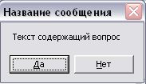
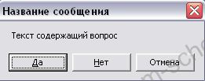
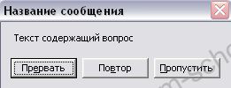
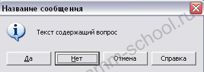
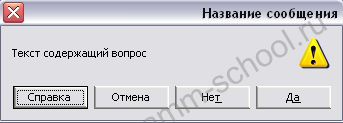
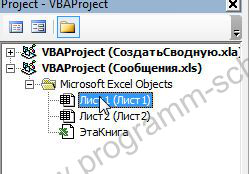

В статье "Примеры макросов в Excel. Диалоговое VBA сообщение msgBox" мы вкратце познакомились с диалоговым сообщением msgbox. Но это было простейшее информационное сообщение. Теперь рассмотрим подробнее работу с функцией MsgBox и все виды диалоговых сообщений.
Синтаксис функции MsgBox
Функция MsgBox имеет следующий синтаксис:
MsgBox ( сообщение [, константы сообщения] [, заголовок] [, файл справки hlp, контекст справки])
Обязательным параметром является «Сообщение», остальные могут быть опущены.
MsgBox “Текст сообщения”
Диалоговое окно вида:

создается следующей командой:
MsgBox "Текст содержащий вопрос", vbYesNo, "Название сообщения"
Для создания сообщения такого вида:

команда будет выглядеть так:
MsgBox "Текст содержащий вопрос", vbYesNoCancel, "Название сообщения"
Сообщение такого вида:

создается командой:
MsgBox "Текст содержащий вопрос", vbAbortRetryIgnore, "Название сообщения"
т.е. из всех трех примеров в команде меняется только второй параметр (vbYesNo, vbYesNoCancel, vbAbortRetryIgnore). Это и есть значения (константы) определяющие вид сообщения. Параметры (vbYesNo, vbYesNoCancel) могут быть заменены на числовое значение, например диалог vbYesNo можно вызвать, указав 4: MsgBox "Текст содержащий вопрос", 4, "Название сообщения".
Ниже приведен полный список констант и эквивалентных им цифровых значений:
|
Константа |
Значение |
Описание |
|
vbOKOnly |
0 |
Выводит сообщение с кнопкой OK |
|
vbOKCancel |
1 |
Выводит сообщение с кнопками OK и Отмена |
|
vbAbortRetryIgnore |
2 |
Выводит сообщение с кнопками Прервать, Повтор, Пропустить |
|
vbYesNoCancel |
3 |
Выводит сообщение с кнопками Да, Нет, Отмена. |
|
vbYesNo |
4 |
Выводит сообщение с кнопками Да и Нет |
|
vbRetryCancel |
5 |
Выводит сообщение с кнопками Повтор и Отмена |
В сообщениях можно слегка изменить внешний вид, назначить кнопку по умолчанию, добавить кнопку "Справка" путем сложения констант.
Например: MsgBox "Текст содержащий вопрос", vbYesNoCancel+vbInformation+vbMsgBoxHelpButton+vbDefaultButton2, "Название сообщения" построит сообщение вида:

vbInformation - добавляет иконку восклицания в сообщение
vbMsgBoxHelpButton - добавляет кнопку "Справка"
vbDefaultButton2 - устанавливает фокус на второй кнопке ("Нет")
Ниже таблица со списком констант иконок и констант, устанавливающих фокус на кнопках:
|
Константа |
Значение |
Описание |
|
vbCritical |
16 |
Выводит иконку критического сообщения (красный овал с крестом) |
|
vbQuestion |
32 |
Выводит иконку с вопросительным знаком |
|
vbExclamation |
48 |
Выводит иконку с восклицательным знаком (в желтом треугольнике) |
|
vbInformation |
64 |
Выводит иконку информационного сообщения |
|
vbDefaultButton1 |
0 |
Устанавливает фокус по умолчанию на первой кнопке |
|
vbDefaultButton2 |
256 |
Устанавливает фокус по умолчанию на второй кнопке |
|
vbDefaultButton3 |
512 |
Устанавливает фокус по умолчанию на третьей кнопке |
|
vbDefaultButton4 |
768 |
Устанавливает фокус по умолчанию на четвертой кнопке |
|
vbMsgBoxHelpButton |
16384 |
Добавляет кнопку Справка |
|
vbMsgBoxRight |
524288 |
Выравнивание текста сообщения по правой стороне |
|
vbMsgBoxRtlReading |
1048576 |
Зеркально переворачивает все элементы в сообщении (см. снимок ниже) |

Как узнать какую кнопку в сообщении нажал пользователь?
Определяться выбор пользователя будет с помощью условия IF. В некоторых ситуациях можно использовать Select Case.
Например, вызовем сообщение двойным нажатием ЛКМ по любой ячейке на листе. В соответствии с выбором пользователя, выведем в эту ячейку текст.
Создаем новую книгу Excel и переходим в режим Visual Basic (Alt+F11). В окне проекта выбираем «Лист1» и кликаем по нему два раза ЛКМ.

В открывшемся окне редактора кода вводим следующую процедуру:
Private Sub Worksheet_BeforeDoubleClick(ByVal Target As Range, Cancel As Boolean)
If MsgBox("Текст содержащий вопрос", vbYesNo, "Название сообщения") = vbYes Then
Selection = "Нажата ДА"
Else
Selection = "Нажата Нет"
End If
End Sub
В условии IF мы сравниваем результат возвращенный функцией MsgBox, с константой vbYes т.е. если в сообщении нажата кнопка «Да», тогда функция MsgBox возвращает значение vbYes (6). Полный перечень констант и их цифровых эквивалентов ниже. Теперь попробуйте на Листе 1 кликнуть два раза по любой ячейке.
Примечание: При вызове сообщения выполнение программы останавливается до тех пор, пока не будет получен ответ от пользователя.
Второй вариант вызова диалога с помощью Select Case.
Создадим вторую процедуру на Листе 2. Код процедуры следующий:
Private Sub Worksheet_BeforeDoubleClick(ByVal Target As Range, Cancel As Boolean)
Dim mes
mes = MsgBox("Текст содержащий вопрос", vbYesNoCancel + vbInformation + vbDefaultButton2, "Название сообщения")
Select Case mes
Case vbYes: Selection = "Нажата ДА"
Case vbNo: Selection = "Нажата НЕТ"
Case vbCancel: Selection = "Нажата Отмена"
End Select
End Sub
В этом случае результат вызова MsgBox присваивается переменной mes и далее в Select Case ищется совпадение и согласно совпадения, выполняются действия.
Вот и все. Ниже прикреплен готовый пример, рассмотренный в этой статье.
Перечень констант и значений, возвращаемых функцией MsgBox:
|
Константа |
Значение |
Кнопка |
|
vbOK |
1 |
OK |
|
vbCancel |
2 |
Отмена |
|
vbAbort |
3 |
Прервать |
|
vbRetry |
4 |
Повтор |
|
vbIgnore |
5 |
Пропустить |
|
vbYes |
6 |
Да |
|
vbNo |
7 |
Нет |
Прикрепленный файл: msgbox.zip